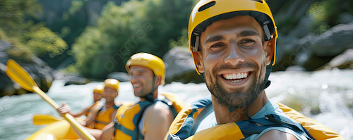

🎯 Missão Proporcionar experiências de rafting emocionantes e seguras, conectando pessoas à natureza por meio da aventura, da diversão e do respeito ao meio ambiente.
🔭 Visão Ser reconhecida como uma empresa de referência em turismo de aventura, destacando-se pela segurança, qualidade dos serviços, respeito à natureza e experiências marcantes proporcionadas aos clientes.
🧭 Objetivo Oferecer atividades de rafting para diferentes níveis de experiência, proporcionando momentos de diversão e aventura em contato com a natureza, sempre priorizando a segurança dos participantes e a preservação dos ambientes naturais.
💙 Valores Segurança — colocar a integridade dos participantes em primeiro lugar. Respeito à natureza — preservar os rios e os ambientes onde as atividades são realizadas. Aventura — incentivar novos desafios e experiências. Responsabilidade — agir de maneira ética e profissional. Trabalho em equipe — valorizar a união entre clientes e equipe. Diversão — tornar cada experiência especial e memorável. Sustentabilidade — buscar práticas que reduzam os impactos ambientais.
⚡ Lema “Aventure-se. Supere seus limites. Viva o rio.”